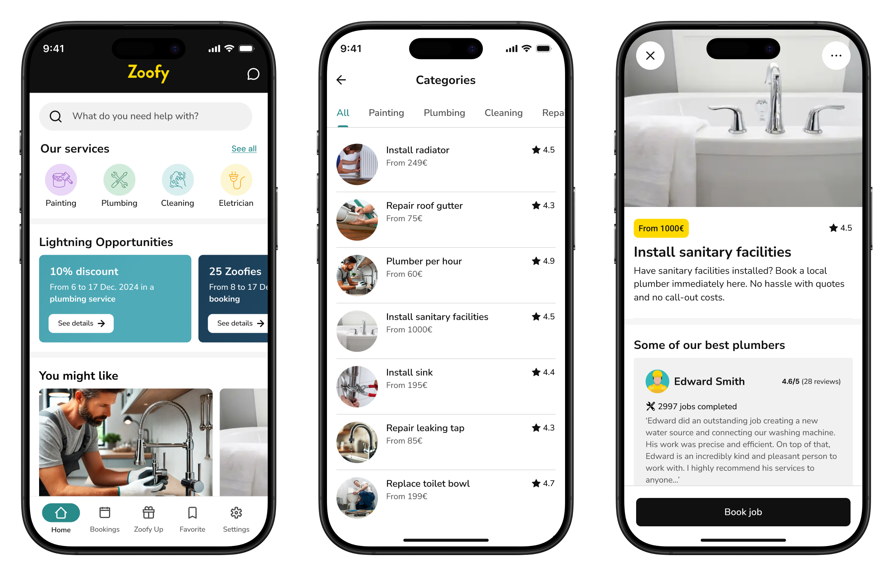

Zoofy
Responsibilities
When I joined the team, my primary goal was to create a design strategy to improve the usability of the app. The team was seeking ways to motivate users to interact with Zoofy more frequently.
To achieve this, I rethought the app's strategy, focusing on two key aspects:
- Creating a circular economy — I designed features like product discounts for users who book a service or complete a challenge, promoting interactions between users and partners while creating a sustainable value exchange in the platform.
- Incorporating gamification — By using game elements, I made the user experience more engaging and rewarding, helping maintain motivation and long-term loyalty.
